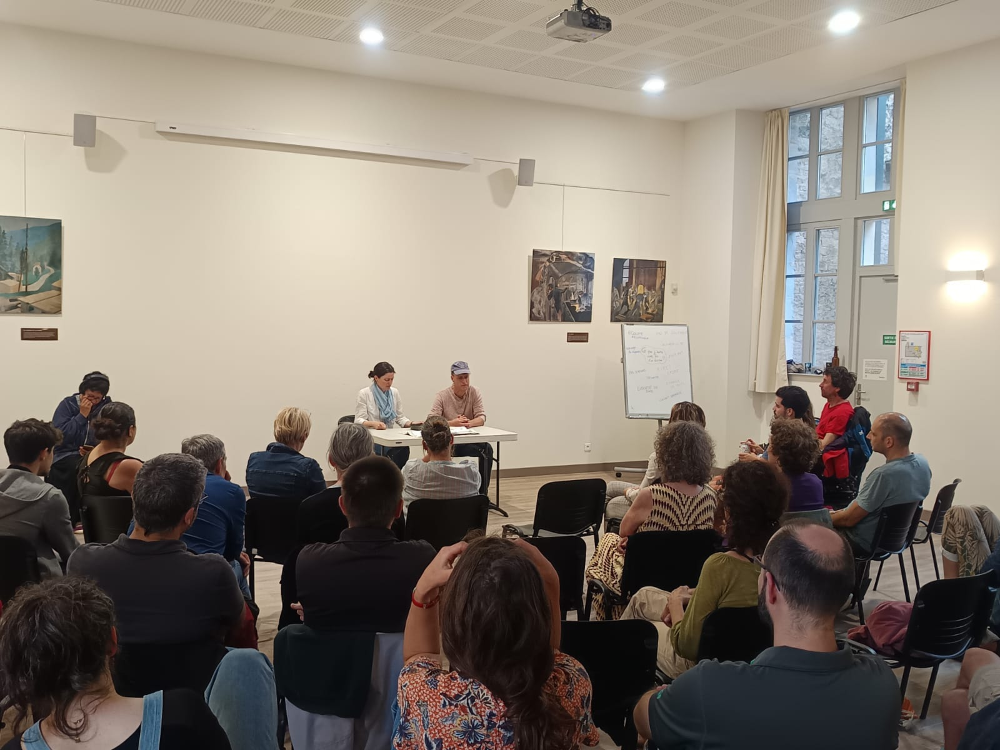
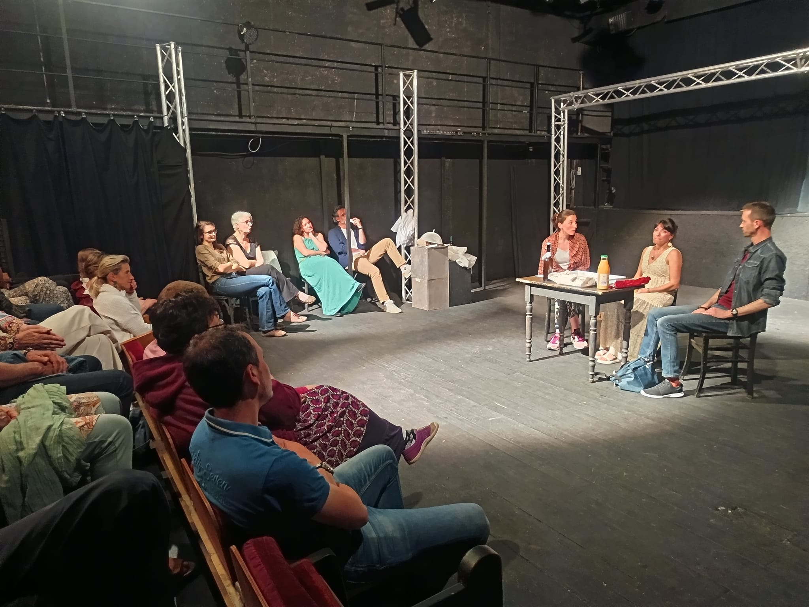
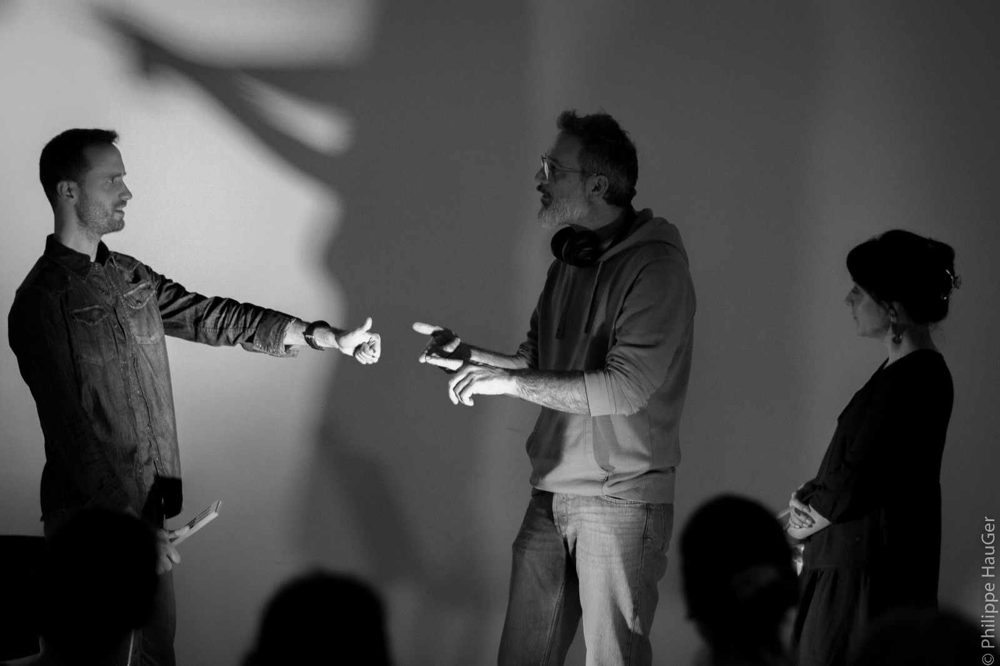

Des spectacles de théâtre interactifs pour faire réagir, débattre et transformer les situations difficiles.
En entreprise, en institution, en famille.



Le théâtre forum se présente sous la forme de jeux de rôles et saynètes afin d'illustrer des situations problématiques et d'en explorer les éventuelles alternatives. Il offre un espace de réflexion et d'échanges pour innover et faire émerger collectivement des solutions.
Le public n'est pas spectateur passif : il devient spect'Acteur et peut entrer en scène pour transformer la situation !
En savoir plus
Des spectacles clés en main sur de nombreuses thématiques, ou sur mesure à partir de vos situations et besoins. Plus d'une vingtaine de créations depuis 2023.
DécouvrirAteliers découverte, création de spectacles, ateliers mensuels, formation de formateurs. Pour tout public, de 5 à 99 ans, aucune expérience requise.
DécouvrirConférences forum, conférences théâtralisées et animations décalées de séminaires. Renforcez vos événements avec l'approche théâtrale.
Découvrir